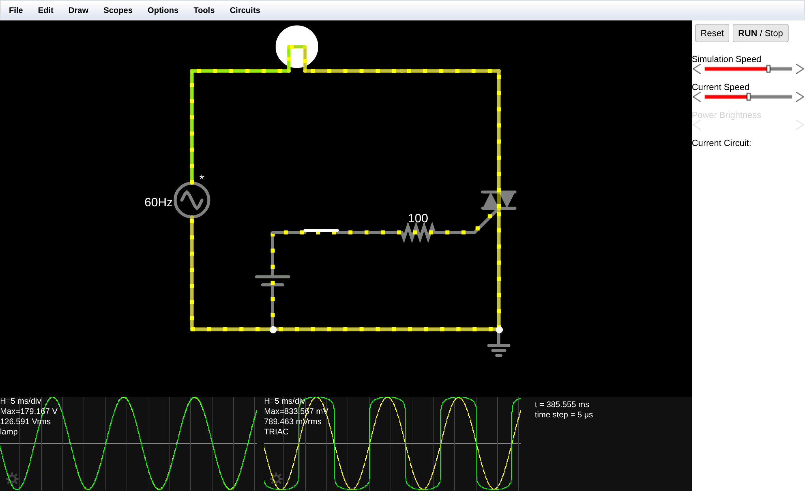
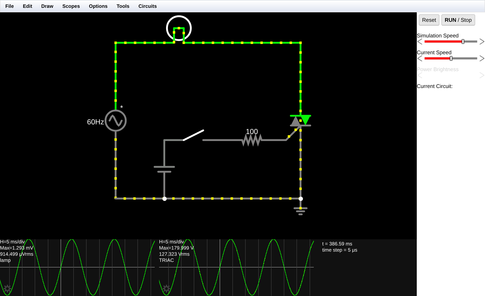
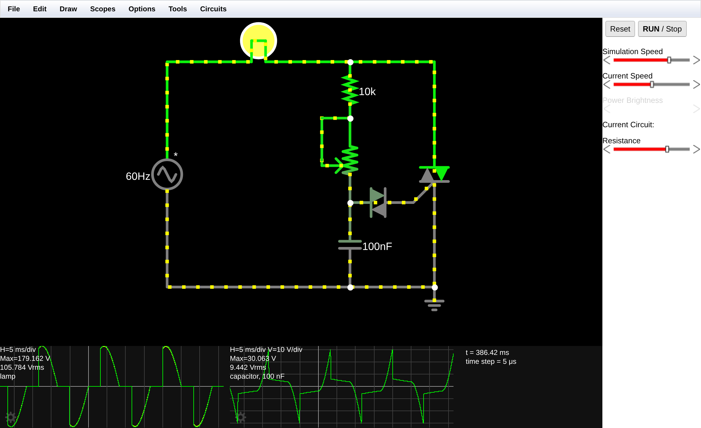
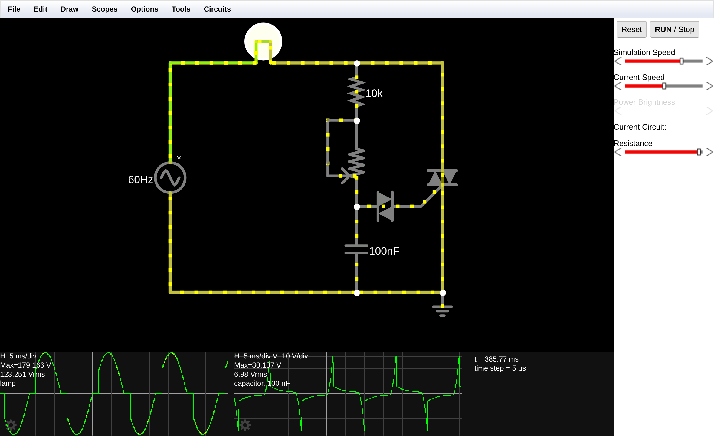
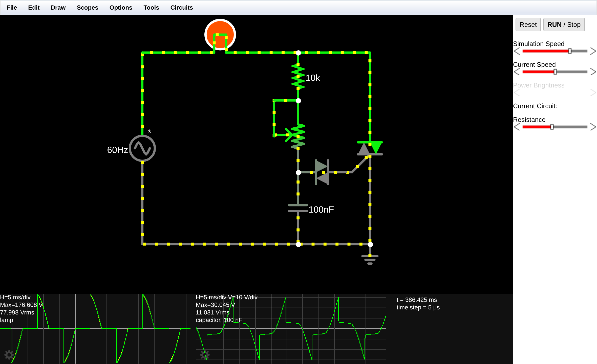

Os dois circuitos foram montados a partir de uma área de trabalho limpa (Circuits > Blank Circuit), com a simulação em execução (RUN / STOP ativo) e passo de cálculo de 5 µs. Todas as medidas apresentadas neste relatório foram lidas diretamente dos osciloscópios do simulador, em regime permanente (t > 350 ms).
Nesta etapa o TRIAC funciona como um interruptor eletrônico: uma fonte de baixa tensão (5 V CC), isolada do circuito de potência pela chave e pelo resistor de gatilho, comanda a condução de uma lâmpada ligada à rede alternada.
| Componente | Caminho no menu Draw | Configuração adotada |
|---|---|---|
| Fonte CA | Inputs and Sources > Add Voltage Source (2-terminal) | Waveform AC · Max Voltage 180 V · 60 Hz |
| Carga (lâmpada) | Outputs and Labels > Add Lamp | Padrão: 120 V / 100 W |
| TRIAC | Active Building Blocks > Add TRIAC | Padrão: IGT = 10 mA · IH = 8,2 mA · RG-MT1 = 100 Ω |
| Fonte CC (controle) | Inputs and Sources > Add Voltage Source (2-terminal) | Waveform DC · Max Voltage 5 V |
| Chave | Passive Components > Add Switch | Padrão (clique alterna aberta/fechada) |
| Resistor de gate | Passive Components > Add Resistor | 100 Ω |
| Terra (GND) | Inputs and Sources > Add Ground | Referência de 0 V, no nó de MT1 |


| Chave S1 | Corrente de gate | Estado do TRIAC | Tensão na lâmpada | Tensão sobre o TRIAC | Lâmpada |
|---|---|---|---|---|---|
| Aberta (0) | 0 mA | Bloqueado (ambos os sentidos) | 914 µVrms (≈ 0) | 127,32 Vrms · pico 180,0 V | Apagada |
| Fechada (1) | ≈ 25 mA CC | Conduzindo nos dois semiciclos | 126,59 Vrms · pico 179,2 V | 789 mVrms · pico 834 mV | Acesa (brilho máximo) |
A corrente de gatilho foi obtida do divisor formado pelo resistor externo e pela resistência interna gate–MT1 do modelo: IG = 5 V / (100 Ω + 100 Ω) = 25 mA, confirmada pela medição de 2,5 V sobre o resistor de 100 Ω. Esse valor é 2,5 vezes a corrente mínima de disparo do modelo (IGT = 10 mA), garantindo disparo confiável em todos os semiciclos.
Com a chave fechada a queda sobre o TRIAC em condução é de apenas 0,79 Vrms contra 126,6 Vrms na carga: o dispositivo se comporta como um contato praticamente ideal, dissipando pouco mais de 0,6 % da potência do circuito. Como a fonte CC mantém corrente de gate permanente, o TRIAC é redisparado logo após cada passagem por zero, e a carga recebe a onda completa — não há recorte. Trata-se, portanto, de uma chave estática: liga e desliga sem contato mecânico, sem arco e sem desgaste, com a vantagem adicional de o comando (5 V) estar eletricamente separado da potência (127 V).
Ao abrir a chave, observa-se o ponto central da prática: o bloqueio não é instantâneo. A lâmpada só apaga quando a onda senoidal passa pelo zero — comportamento detalhado na resposta à questão Q2.
O comando manual foi substituído por uma rede de atraso RC associada a um DIAC, permitindo regular o brilho da lâmpada de forma contínua por controle de ângulo de fase.
| Ação / Componente | Caminho no menu Draw | Configuração |
|---|---|---|
| Remover controle CC | Selecionar e pressionar Delete | Excluídos: fonte CC, chave e resistor de 100 Ω |
| Potenciômetro | Passive Components > Add Potentiometer | Impedance / Max: 250 kΩ |
| Resistor de proteção | Passive Components > Add Resistor | 10 kΩ |
| Capacitor | Passive Components > Add Capacitor | 100 nF |
| DIAC | Active Building Blocks > Add DIAC | Padrão: VBO = 30 V · Ron = 500 Ω · IH = 10 mA |
O resistor de 10 kΩ é essencial: ele limita a corrente quando o cursor chega ao fim de curso, impedindo que o capacitor seja ligado diretamente à rede através de resistência nula.

O controle Resistance foi deslizado de um extremo ao outro. Para cada posição foram registrados o valor eficaz na lâmpada e o pico de tensão no capacitor. O ângulo de disparo α foi calculado a partir do valor eficaz medido, pela relação do controle de fase com carga resistiva:
Vrms(α) = (Vp/√2) · √[ 1 − α/π + sen(2α)/(2π) ]
| Posição do cursor | R do potenc. | R total da rede | V na lâmpada | α (calculado) | P / Pmáx | Pico no capacitor | Brilho observado |
|---|---|---|---|---|---|---|---|
| Fim de curso — R mínima | ≈ 1,3 kΩ | ≈ 11 kΩ | 125,55 V | 25° | 98 % | 30,18 V | Máximo |
| ≈ 95 % do curso | ≈ 12,5 kΩ | ≈ 22,5 kΩ | 123,25 V | 37° | 95 % | 30,14 V | Muito alto |
| ≈ 70 % do curso | ≈ 75 kΩ | ≈ 85 kΩ | 105,78 V | 71° | 70 % | 30,06 V | Médio |
| ≈ 45 % do curso | ≈ 138 kΩ | ≈ 148 kΩ | 78,00 V | 101° | 38 % | 30,05 V | Baixo |
| ≈ 35 % do curso | ≈ 163 kΩ | ≈ 173 kΩ | 64,85 V | 112° | 26 % | 30,03 V | Muito baixo |
| ≈ 20 % do curso | ≈ 200 kΩ | ≈ 210 kΩ | 38,17 V | 135° | 9 % | 30,02 V | Filamento em brasa |
| Fim de curso — R máxima | ≈ 245 kΩ | ≈ 255 kΩ | 0,008 V | não dispara | 0 % | 18,71 V | Apagada |


| Condição | DIAC | Pulso no gate | TRIAC | Efeito na carga |
|---|---|---|---|---|
| VC < 30 V (VBO) | Bloqueado (alta impedância) | Não | Mantém o estado anterior | Capacitor continua carregando |
| VC atinge 30 V | Entra em ruptura (Ron ≈ 500 Ω) | Sim — pulso de ≈ 50 mA | Dispara (IG > IGT) | Carga recebe a tensão a partir de α |
| Corrente de carga → 0 | Já desligado | — | Desliga quando |I| < IH | Fim do semiciclo; ciclo recomeça |
| VC nunca atinge 30 V | Nunca conduz | Nunca | Permanece bloqueado | Lâmpada apagada |
Porque a diferença está na estrutura física do semicondutor, não apenas no modo de comando.
O diodo é uma junção PN simples: conduz quando o anodo está positivo em relação ao catodo e bloqueia na polaridade inversa. O SCR é um dispositivo de quatro camadas (P-N-P-N) com anodo, catodo e gatilho; mesmo sendo comandado, ele só pode conduzir em um sentido, quando o anodo está positivo. Em corrente alternada, portanto, um SCR sozinho aproveita apenas metade da onda — o semiciclo negativo é perdido.
O TRIAC é um dispositivo de cinco camadas (N-P-N-P-N), funcionalmente equivalente a dois SCRs ligados em antiparalelo (inverso-paralelo) dentro da mesma pastilha e compartilhando o mesmo gatilho. Por isso seus terminais principais não se chamam anodo e catodo — não há polaridade fixa — e sim MT1 e MT2 (Main Terminal 1 e 2). No semiciclo em que MT2 está positivo em relação a MT1, conduz uma das estruturas internas; no semiciclo seguinte, com a polaridade invertida, conduz a estrutura complementar. Além disso, o TRIAC pode ser disparado nos quatro quadrantes de operação (gate positivo ou negativo, com MT2 positivo ou negativo), o que o torna compatível com comando CC — como na Parte A — ou com pulsos de qualquer polaridade.
Evidência experimental: na Figura 1, com uma única fonte CC de comando, o osciloscópio da lâmpada registra a senoide completa, 126,59 Vrms com picos de +179 V e −179 V. Se o componente fosse um SCR, o traço mostraria apenas os semiciclos positivos e o valor eficaz cairia para cerca de 89 V (1/√2 do valor medido).
Porque o TRIAC é um dispositivo de engate (latching): o gatilho tem poder para ligar, mas não para desligar.
O pulso de gate apenas inicia a condução. A partir do instante em que a estrutura interna entra em condução, ela se automantém pela realimentação regenerativa das junções internas — o próprio fluxo de corrente principal sustenta o estado ligado. Retirar a corrente de gate não tem efeito algum: o TRIAC continua conduzindo.
O único modo de desligá-lo é fazer a corrente principal cair abaixo da corrente de manutenção (IH, holding current — 8,2 mA no modelo do Falstad). Em corrente alternada isso acontece espontaneamente duas vezes por ciclo, na passagem da corrente por zero. É o que se chama de comutação natural (ou comutação pela rede): o TRIAC "se desliga sozinho", sem necessidade de circuito auxiliar de bloqueio.
Portanto, ao abrir a chave no meio de um semiciclo, a corrente de gate desaparece, mas a carga continua alimentada até o próximo cruzamento por zero — um atraso máximo de 8,33 ms em 60 Hz (meio período). Só a partir daí, sem novo pulso de gate, o TRIAC permanece bloqueado e a lâmpada apaga de vez (Figura 2).
Consequências práticas. (i) Essa característica é uma vantagem: o desligamento ocorre com corrente nula, o que elimina arco, sobretensões de chaveamento e interferência eletromagnética — por isso o disparo em "passagem por zero" é a base dos relés de estado sólido. (ii) Com carga indutiva (motores, reatores) a corrente está atrasada em relação à tensão, de modo que o zero de corrente ocorre depois do zero de tensão; no desligamento o TRIAC fica submetido a um degrau de tensão (dv/dt) que pode redispará-lo indevidamente — daí o uso de redes snubber (RC série em paralelo com o TRIAC) em aplicações reais. Com a carga resistiva desta prática, tensão e corrente estão em fase e o problema não se manifesta.
O DIAC funciona como uma chave de limiar bidirecional — um "detector de nível de tensão" que transforma a rampa lenta do capacitor em um pulso de disparo rápido, intenso e bem definido.
Ele é um diodo de disparo simétrico de duas camadas equivalentes, sem terminal de gatilho, com tensão de ruptura (breakover) VBO = 30 V no modelo adotado. Seu papel na rede de disparo é triplo:
É exatamente o que mostram os osciloscópios: em todas as posições do potenciômetro em que há disparo, o pico de tensão no capacitor fica travado entre 30,02 V e 30,18 V — o DIAC "corta" a rampa sempre no mesmo nível, e o que varia é apenas o tempo que o capacitor leva para chegar lá.
Potenciômetro no mínimo (Figura 4 — R total ≈ 11 kΩ). A constante de tempo é pequena (τ = RC ≈ 1,1 ms, contra 8,33 ms de meio período), de modo que o capacitor acompanha quase sem atraso a tensão da rede e atinge os 30 V logo no começo de cada semiciclo. O disparo ocorre em α ≈ 25° e a forma de onda na lâmpada é praticamente a senoide completa, com apenas um pequeno degrau junto à passagem por zero. Resultado: 125,55 Vrms, ou 98 % da potência máxima — brilho máximo, filamento branco-amarelado.
Potenciômetro próximo ao máximo (Figura 5 — R total ≈ 173 kΩ). A constante de tempo sobe para τ ≈ 17 ms, maior que o próprio semiciclo. Dois efeitos se somam: o capacitor demora muito mais para carregar e sua amplitude é fortemente atenuada pelo divisor RC (ωRC ≈ 6,5). Ele só alcança os 30 V bem depois do pico da rede, disparando em α ≈ 112°. A onda na lâmpada vira uma "fatia" estreita colada ao final de cada semiciclo: a tensão salta de zero direto para o valor instantâneo da rede naquele ângulo (degrau abrupto) e depois decai seguindo a senoide até o zero. Resultado: 64,85 Vrms, apenas 26 % da potência — filamento visivelmente avermelhado. No fim de curso o capacitor nem chega aos 30 V (pico de 18,7 V) e a lâmpada apaga por completo.
Relação entre onda e brilho. O brilho acompanha a potência, e a potência numa carga resistiva é proporcional ao quadrado do valor eficaz: P = Vrms²/R. É por isso que o brilho não cai proporcionalmente ao ângulo — ele cai muito mais depressa. Entre α = 25° e α = 112° o valor eficaz caiu apenas pela metade (125,6 V → 64,9 V), mas a potência caiu para um quarto (98 % → 26 %). Em outras palavras: quanto maior o atraso no disparo, menor a "fatia" de onda entregue à carga, e o brilho cai com o quadrado dessa redução. O controle é sempre mais sensível na região central do curso (α próximo de 90°), onde a derivada da curva de potência é máxima — comportamento típico de qualquer dimmer por ângulo de fase.
Observação de engenharia. O "fatiamento" da onda não é gratuito: o degrau abrupto de corrente a cada disparo é rico em harmônicos ímpares (3º, 5º, 7º…) que retornam para a rede, e o dv/dt elevado gera interferência eletromagnética. Por isso dimmers comerciais trazem sempre um filtro de EMI — tipicamente um indutor em série com a carga e um capacitor de classe X — que o circuito didático desta prática não inclui.
Os dois links abaixo abrem o circuito já montado e em execução no Falstad. São os dois circuitos exigidos pela atividade.
Os dois circuitos exigidos foram montados e simulados com êxito, e as medições confirmam quantitativamente o comportamento esperado do TRIAC.
Na Parte A o TRIAC atuou como chave estática: comandado por apenas 5 V e 25 mA, controlou uma carga de 127 V com queda em condução de 0,79 Vrms — menos de 0,7 % da tensão do circuito — entregando à lâmpada a onda senoidal completa, o que comprova a condução bidirecional. O desligamento evidenciou a comutação natural: aberta a chave, a condução só cessa na passagem da corrente por zero.
Na Parte B, trocando o comando manual pela rede RC com DIAC, o mesmo TRIAC passou de interruptor a controlador de potência. Variando o potenciômetro obteve-se uma faixa contínua de 98 % até 0 % da potência, com ângulos de disparo de 25° a 135°, confirmando que o DIAC trava o disparo sempre no mesmo limiar de 30 V e que o que o potenciômetro controla é o tempo até esse limiar.
A comparação entre as duas montagens deixa clara a diferença conceitual: a chave estática opera em dois estados (tudo ou nada, α = 0° ou TRIAC bloqueado), enquanto o controle de potência por ângulo de fase aproveita justamente a propriedade de engate do tiristor para escolher, a cada semiciclo, quanto da onda será entregue à carga.
Texto exportável pelo Falstad (File > Import from Text), reproduzido aqui para documentação:
$ 1 0.000005 20 50 180 50 v 1056 528 1056 272 0 1 60 180 0 0 0.5 181 1056 272 1264 272 0 300 100 120 0.4 0.4 w 1264 272 1360 272 0 206 1360 272 1312 528 0 0.01 0.0082 100 false w 1056 528 1136 528 0 w 1136 528 1360 528 0 g 1360 528 1360 544 0 v 1136 528 1136 432 0 0 40 5 0 0 0.5 s 1136 432 1232 432 0 0 false r 1232 432 1328 432 0 100 o 1 32 0 29187 180 0.5 0 2 1 3 o 3 32 0 29187 180 0.5 1 2 3 3
$ 1 0.000005 20 50 180 50 v 1056 528 1056 272 0 1 60 180 0 0 0.5 181 1056 272 1264 272 0 300 100 120 0.4 0.4 w 1264 272 1360 272 0 206 1360 272 1312 528 0 0.01 0.0082 100 false w 1056 528 1264 528 0 w 1264 528 1360 528 0 g 1360 528 1360 544 0 r 1264 272 1264 336 0 10000 174 1264 336 1232 432 0 250000 0.7 Resistance w 1232 384 1232 336 0 w 1232 336 1264 336 0 c 1264 432 1264 528 0 0.0000001 0 203 1264 432 1328 432 0 500 100000000 30 0.01 o 1 32 0 29187 180 0.5 0 2 1 3 o 11 32 0 29187 50 0.05 1 1